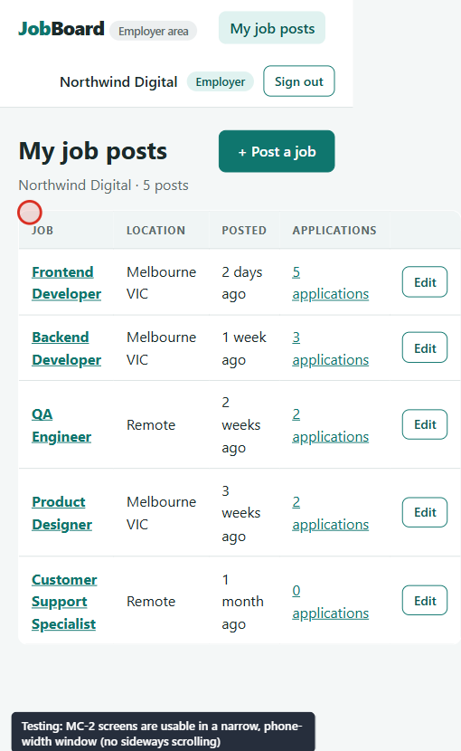
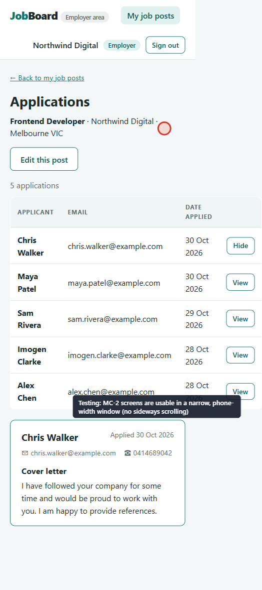
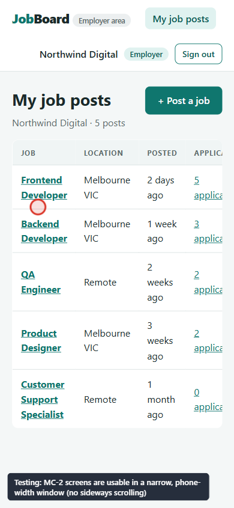
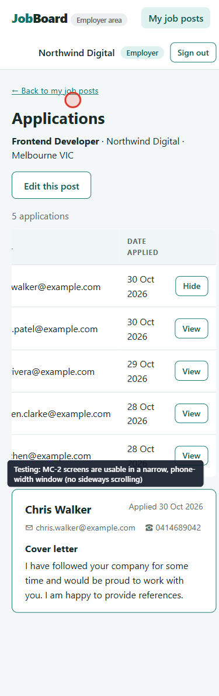

← All tickets · Test results · Process document, Stage 4
JB-001
Employer pages scroll sideways on a phone-width screen
Verified – closed Bug Severity: medium
b111266b111266 (commit pending)1. Report
On a phone-width window (390 px wide) the employer's My job posts and Applications pages are wider than the screen. The whole page scrolls sideways, so the "Edit" and "View" buttons on the right are cut off and the page looks broken.
Steps to reproduce
- Open the app and make the browser window 390 px wide (or use the device toolbar in Chrome, 390 × 844).
- Sign in as
hiring@northwind.example/demo1234. The page shown is My job posts (S-05). - Look for a sideways scroll bar. Then click "5 applications" on Frontend Developer to open Applications (S-07).
| Expected | Every screen fits the width of the phone. Nothing makes the whole page scroll sideways. |
|---|---|
| Actual | S-05 is 510 px wide and S-07 is 524 px wide in a 390 px window. The page scrolls sideways. |
Evidence from the failed run
MC-2 screens are usable in a narrow, phone-width window (no sideways scrolling) Expected: [] Received: ["S-05 My job posts", "S-07 Applications"] (screens that scroll sideways at 390 px wide)




Source: test result 20261030-133126, manual checklist MC-2.
2. Investigation
| Question | Finding |
|---|---|
| Is it every screen? | No. The checklist visits all eight screens; only S-05 and S-07 are over-wide. S-04 (3 columns) passed, but it uses the same table. |
| What is wide? | Both screens show a data table (table.data). S-05 has 5 columns (Job, Location, Posted, Applications, button). S-07 has 4 columns and the email address column cannot be shortened. At 390 px the columns cannot all fit. |
| Why does the page grow? | In web/src/style.css the table is width:100%, but a table is never narrower than its content. There is no narrow-screen rule for tables: the only media queries are for the search form (700 px), the job form rows (600 px) and the job detail layout (800 px). |
| Is it a coding mistake? | No. The Stage 2 mockup stylesheet (static-design/style.css) has the same gap, and the app reused its CSS. The mockups were only looked at on a desktop screen, so this was a design gap. This is exactly what manual checklist item MC-2 exists to catch. |
| Impact | Medium. Nothing is lost and a desktop user is not affected, but employers on a phone cannot reach the Edit / View buttons without sideways scrolling, and the page looks broken. No use case is blocked. |
Options considered
| Option | Good | Not so good | |
|---|---|---|---|
| A. Let the table scroll inside its own box | Smallest change. All columns and the real table markup stay (good for screen readers). The page itself stops scrolling sideways. | The user still scrolls sideways inside the table. | Chosen |
| B. Turn each row into a stacked card under 600 px | No sideways scrolling at all. | Needs new card markup and labels for every cell, new design for 3 screens, more risk. | Later, if needed |
| C. Hide some columns on phones | Quick. | Hides information (for example the applicant's email). | Rejected |
3. Solution
A small TableScroll component wraps each data table in a box that scrolls sideways when the table is too wide.
| File | Change |
|---|---|
web/src/components/ui.tsx | New TableScroll component: <div className="table-scroll"> |
web/src/style.css | .table-scroll { overflow-x: auto; border-radius: var(--radius); } |
EmployerJobsPage.tsx (S-05), JobApplicationsPage.tsx (S-07), MyApplicationsPage.tsx (S-04) | The table is wrapped in <TableScroll>. S-04 is included so a long job title cannot break it later. |
The mockups (Stage 2) were not changed. Choosing option A is a small design decision, recorded in the decision log (decision 31).
4. Verification
| Check | Result |
|---|---|
| TypeScript check, all four workspaces | Pass |
| Unit and API tests (Vitest) | Pass 54 of 54 |
| Browser tests (Playwright) | Pass 35 of 35 before JB-002's test was added; 36 of 36 in the final run |
| MC-2 re-run (the test that failed) | Pass – no screen scrolls sideways at 390 px. First seen in run 20261030-133827, and again in the final run 20261030-134400. |
| Nothing else broke (regression) | Pass – in the final run all 32 test cases and 6 security tests pass, as before the fix. |
| Looked at by eye | Pass – screenshots below |




Known limitation (accepted): on a phone the first column is partly out of sight until the user scrolls the table back, and there is no arrow hinting that the table scrolls. A stacked layout (option B) would remove this; it is not needed for a prototype.
5. History
| When (about) | Event |
|---|---|
| 30 Oct, 1:31 pm | Test run 20261030-133126: MC-2 fails. Ticket opened. |
| 30 Oct, 1:33 pm | Investigation: the screenshots are 510 and 524 px wide; the table CSS has no narrow-screen rule; the mockup CSS has the same gap. |
| 30 Oct, 1:36 pm | Option A chosen and implemented. Typecheck, unit/API and browser tests pass. |
| 30 Oct, 1:38 pm | Run 20261030-133827: MC-2 passes. Screenshots saved to this ticket. |
| 30 Oct, 1:44 pm | Final run 20261030-134400: all plan items pass. Ticket closed as verified. |